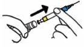

RÉSUMÉ DES CARACTÉRISTIQUES DU PRODUIT
ANSM - Mis à jour le : 29/12/2011
TWINJECT 0,30 mg/0,30 ml, solution injectable en seringue préremplie
2. COMPOSITION QUALITATIVE ET QUANTITATIVE
1 ml de solution injectable contient 1 mg d'adrénaline (épinéphrine).
Une dose contient 0,3 mg (0,3 ml) d'adrénaline.
La seringue préremplie peut délivrer deux doses de 0,3 mg (0,3 ml) d'adrénaline.
Excipients: Bisulfite de sodium (E222).
Pour la liste complète des excipients, voir rubrique 6.1.
Solution injectable en seringue préremplie.
Solution limpide, incolore, pratiquement sans particules.
4.1. Indications thérapeutiques
Traitement d'urgence des réactions allergiques aiguës (chocs anaphylactiques) provoquées par des aliments, des médicaments, le latex, des morsures ou des piqures d'insectes ou d'autres allergènes, ainsi que du choc anaphylactique induit par un exercice physique ou idiopathique.
4.2. Posologie et mode d'administration
Voie intramusculaire.
Dans une proportion significative de patients (par exemple ceux en surpoids), la voie d'injection sera sous-cutanée.
Posologie
Adultes, adolescents et enfants de plus de 30 kg:
La dose habituelle est de 0,3 mg par injection, dans la face antérolatérale (côté externe) de la cuisse, par voie intramusculaire.
La première dose est administrée de façon automatique lorsque le patient applique Twinject sur sa cuisse pour l'injection.
En cas de réaction prolongée ou biphasique, Twinject est conçue pour administrer une seconde dose manuelle de 0,3 mg (0,3 ml) d'adrénaline. Le dispositif contient une aiguille qui doit être utilisée pour les deux injections.
Enfants de 15 à 30 kg:
Il est recommandé d'utiliser la formulation pédiatrique dosée à 0,15 mg/0.15ml.
Mode d'administration
TWINJECT est destiné à l'auto-administration immédiate par le patient, dès l'apparition des premiers signes et symptômes du choc anaphylactique. Ceux-ci peuvent se produire dans les minutes qui suivent l'exposition à l'allergène. Ils se manifestent généralement par une urticaire, des bouffées vasomotrices ou un angiœdème.
Des réactions plus sévères peuvent toucher les systèmes circulatoire et pulmonaire.
Une seconde dose est également disponible pour une injection manuelle, dans le cas où les symptômes persistent, ou s'aggravent, environ 5 minutes après la première injection, et si le patient n'a pas encore été pris en charge dans un service médical d'urgence.
Le patient peut effectuer l'injection manuelle de la seconde dose après démontage partiel de TWINJECT.
Veuillez vous reporter à la rubrique 6.6 pour les instructions d'emploi détaillées.
Hypersensibilité à l'adrénaline, au bisulfite de sodium ou à l'un des excipients (voir rubrique 4.4 pour de plus amples informations sur les sulfites). Il n'y a toutefois aucune contre-indication absolue à l'utilisation de TWINJECT en cas d'urgence allergique.
4.4. Mises en garde spéciales et précautions d'emploi
TWINJECT ne doit pas se substituer aux soins médicaux immédiats. Un suivi médical est indispensable après administration. Le patient doit être pris en charge par une équipe de soins d'urgence immédiatement après l'administration de la première dose afin de bénéficier d'une surveillance médicale attentive de l'épisode anaphylactique et recevoir un traitement complémentaire si nécessaire.
Le médecin qui prescrit TWINJECT doit passer en revue le contenu de ce RCP de manière détaillée avec le patient. Les patients doivent comprendre correctement les instructions sur le mode d'administration, la notice et l'étiquetage.
Le médecin doit régulièrement s'assurer que le patient et les proches habilités à administrer TWINJECT ont bénéficié d'une démonstration sur l'emploi du dispositif afin de se familiariser avec son utilisation. Un dispositif sans aiguille est disponible pour la démonstration.
TWINJECT doit être exclusivement administré dans la face antérolatérale (côté externe) de la cuisse.
Une injection accidentelle dans la main ou le pied peut provoquer un défaut d'irrigation sanguine de l'extrémité du membre concerné et doit être évitée. Ne pas injecter dans la fesse. Si une injection accidentelle se produit dans ces zones, informer le médecin de l'injection accidentelle lors de la prise en charge par le service médical d'urgence le plus proche pour le traitement de l'anaphylaxie. Eviter toute injection intra-vasculaire accidentelle. De fortes doses ou une injection intraveineuse accidentelle d'adrénaline peuvent entraîner une hémorragie cérébrale suite à une brusque augmentation de la pression artérielle. Ne pas administrer par voie intraveineuse. Des vasodilatateurs à action rapide permettent de neutraliser les effets vasopresseurs marqués de l'adrénaline dans ces cas d'administration accidentelle.
TWINJECT n'est pas adapté aux patients, ou aux soignants, porteurs de handicaps comme une arthrite débilitante grave des mains, car l'administration de ce produit requiert une certaine dextérité.
Après administration d'adrénaline, des effets indésirables peuvent survenir chez les patients atteints des troubles suivants: hyperthyroïdie, maladie cardiovasculaire (angine de poitrine grave, cardiomyopathie obstructive, arythmie ventriculaire et hypertension), phéochromocytome, pression intraoculaire élevée, insuffisance rénale grave, adénome prostatique avec rétention urinaire, hypercalcémie, hypokaliémie, diabète, ou chez les patients âgés ou les femmes enceintes.
Utiliser avec précaution chez les patients présentant une pathologie cardiaque, par exemple une maladie coronaire, une atteinte myocardique, un cœur pulmonaire, des troubles du rythme cardiaque ou une tachycardie. Chez ces patients, l'adrénaline peut déclencher ou aggraver un angor, ou induire des arythmies ventriculaires.
L'administration d'adrénaline peut induire une augmentation de la glycémie chez les patients diabétiques.
Les patients atteints de la maladie de Parkinson peuvent subir une aggravation temporaire des symptômes.
TWINJECT contient du bisulfite de sodium (E222) et peut provoquer des réactions allergiques sévères telles que des réactions anaphylactiques ou un bronchospasme, en particulier chez les patients asthmatiques. Les patients sensibilisés aux sulfites doivent être soigneusement informés des circonstances dans lesquelles TWINJECT doit être utilisé.
En cas de réaction allergique menaçant le pronostic vital, TWINJECT peut être utilisé même si le patient est allergique aux sulfites.
TWINJECT contient moins de 1 mmol de sodium pour 0,30 ml.
4.5. Interactions avec d'autres médicaments et autres formes d'interactions
Les effets de l'adrénaline peuvent être potentialisés par les antidépresseurs tricycliques, les antidépresseurs mixtes noradrénergiques-sérotonergiques comme la venlafaxine, la sibutramine ou le milnacipran et les inhibiteurs de la monoamine oxydase (IMAO) (brusque augmentation de la pression artérielle et risque d'arythmie cardiaque), les inhibiteurs de la catéchol-O-méthyltransférase (COMT), les hormones thyroïdiennes, la théophylline, l'ocytocine, les parasympatholytiques, certains antihistaminiques (diphenhydramine, chlorphéniramine), la lévodopa et l'alcool.
Une hypertension artérielle sévère et une bradycardie peuvent se produire si l'adrénaline est administrée en association avec des médicaments bêtabloquants non sélectifs.
L'association à des médicaments sympathomimétiques peut potentialiser les effets de l'adrénaline.
Utiliser TWINJECT avec précaution chez les patients recevant un traitement pouvant favoriser une arythmie, par exemple: les digitaliques, la quinidine, les anesthésiques halogénés.
Les effets vasopresseurs de l'adrénaline peuvent être annulés par l'administration de vasodilatateurs à action rapide ou de médicaments bloquant les récepteurs alpha adrénergiques (entraînant une diminution de la pression artérielle). Les effets cardiostimulant et bronchodilatateur peuvent être antagonisés par des bêta-bloquants, en particulier des bêta-bloquants non sélectifs.
L'adrénaline inhibant la sécrétion d'insuline et augmentant donc la glycémie, il peut être nécessaire d'ajuster le traitement par l'insuline ou d'autres traitements hypoglycémiants.
Aucune étude spécifique, contrôlée n'est disponible chez la femme enceinte.
L'adrénaline ne doit être utilisée chez la femme enceinte que si le bénéfice attendu justifie le risque potentiel pour le fœtus.
L'adrénaline traverse la barrière placentaire et peut provoquer une hypoxie fœtale et/ou un avortement spontané.
L'adrénaline n'est pas biodisponible par voie orale; l'adrénaline excrétée dans le lait maternel ne devrait pas avoir d'effet chez le nourrisson.
4.7. Effets sur l'aptitude à conduire des véhicules et à utiliser des machines
L'adrénaline a une influence nulle ou négligeable sur l'aptitude à conduire ou à utiliser des machines.
En raison des symptômes consécutifs au choc anaphylactique, la conduite ou l'utilisation des machines n'est toutefois pas recommandée après l'administration d'adrénaline.
Les effets indésirables dépendent de la sensibilité individuelle du patient et de la dose administrée. Les réactions indésirables dues à l'adrénaline sont listées ci-dessous, toutefois leurs fréquences ne peuvent pas être estimées sur la base des données disponibles:
· Troubles du métabolisme et de la nutrition: hyperglycémie, hypokaliémie, acidose métabolique
· Affections psychiatriques: anxiété, hallucinations, nervosité
· Affections du système nerveux: mydriase, tremblement, céphalée, asthénie
· Affections cardiaques: syncopes, palpitations, tachycardie, vertiges, angor, hypertension
· Affections vasculaires: vasoconstriction, refroidissement périphérique
· Affections respiratoires, thoraciques et médiastinales: difficultés respiratoires, œdème pulmonaire
· Affections gastro-intestinales: nausées, vomissements
· Affections musculo-squelettiques, troubles du tissu conjonctif et des os: faiblesse
· Affections du rein et des voies urinaires: rétention urinaire, insuffisance rénale
· Troubles généraux et anomalies au site d'administration: pâleur, hyperhidrose
A forte dose ou chez les patients sensibles à l'adrénaline, les effets indésirables sont: arythmie cardiaque (fibrillation ventriculaire/arrêt cardiaque), accès d'hypertension artérielle (provoquant parfois une hémorragie cérébrale), voire une vasoconstriction (par exemple cutanée, des muqueuses et des reins).
TWINJECT contient du bisulfite de sodium et peut provoquer des réactions de type allergique dont des réactions anaphylactiques ou menaçant le pronostic vital. Des crises d'asthme peu sévères chez certains patients sensibilisés au sulfite peuvent également se produire.
L'adrénaline devenant rapidement inactive dans l'organisme, le traitement consécutif à un surdosage consiste avant tout en un traitement symptomatique.
Un surdosage ou une injection intra-vasculaire accidentelle d'adrénaline peut provoquer une hémorragie cérébrale par augmentation brusque de la pression artérielle. La mort peut résulter d'un œdème pulmonaire aigu dû à la vasoconstriction périphérique et à la stimulation cardiaque.
Les effets vasopresseurs de l'adrénaline peuvent être antagonisés par l'administration de vasodilatateurs à action rapide ou de médicaments alpha-bloquants adrénergiques. Malgré ces mesures, en cas d'hypotension artérielle réactionnelle prolongée, il peut être nécessaire d'administrer un autre médicament vasopresseur telle que de la noradrénaline.
En cas de surdosage, un œdème pulmonaire aigu avec obstruction des voies respiratoires peut être traité par l'administration de médicaments alpha-bloquants adrénergiques à action rapide telle que la phentolamine et/ou la pratique de la ventilation assistée en pression positive.
Un surdosage d'adrénaline peut provoquer une bradycardie transitoire suivie d'une tachycardie pouvant conduire à une arythmie pouvant être fatale.
Des extrasystoles ventriculaires peuvent survenir dans la minute qui suit l'injection et peuvent être suivies d'une tachycardie ventriculaire multifocale (rythme de préfibrillation). La régression des effets ventriculaires peut être suivie d'une tachycardie atriale et, occasionnellement, d'un bloc atrioventriculaire.
Cette arythmie peut être traitée par l'administration de bêta-bloquants adrénergiques précédés ou associés à des alpha bloquants adrénergiques permettant de contrôler des effets circulatoires périphériques alpha adrénergiques.
Un surdosage peut provoquer une extrême pâleur, un refroidissement de la peau, une acidose métabolique et/ou une insuffisance rénale. Des mesures correctives adaptées doivent être prises dans de telles situations.
5. PROPRIETES PHARMACOLOGIQUES
5.1. Propriétés pharmacodynamiques
Classe pharmacothérapeutique: AGENTS ADRENERGIQUES et DOPAMINERGIQUES, ADRENALINE.
Code ATC: C01CA24.
L'adrénaline est une catécholamine naturellement secrétée par la médullosurrénale en réponse à l'épuisement ou au stress. C'est une amine sympathomimétique à action directe, ayant des effets aussi bien sur les récepteurs alpha que bêta adrénergiques et dont les effets sur les organes cibles sont complexes. C'est le médicament de choix pour combattre les réactions d'hypersensibilité allergiques ou idiopathiques et l'anaphylaxie induite par l'effort.
En l'absence d'efficacité clinique suffisante, une injection supplémentaire est nécessaire après 5 minutes, voire plus tôt. Environ 20 % des patients peuvent nécessiter plus d'une injection d'adrénaline.
L'adrénaline a une action vasoconstrictrice par stimulation alpha adrénergique importante. Elle permet de lutter contre la vasodilatation et l'excès de la perméabilité vasculaire responsables d'une perte liquidienne intravasculaire et une hypotension; symptômes pharmaco-toxiques prépondérants du choc anaphylactique. Par son action stimulante des récepteurs bronchiaux bêta adrénergiques, l'adrénaline provoque une puissante bronchodilatation diminuant le sifflement respiratoire et la dyspnée. L'adrénaline diminue également le prurit, l'urticaire et l'angiœdème associés au choc.
Elle peut également s'avérer efficace pour soulager les symptômes gastro-intestinaux et génito-urinaires associés à l'anaphylaxie en raison de ses effets relaxants sur les muscles lisses de l'estomac, l'intestin, l'utérus et la vessie.
5.2. Propriétés pharmacocinétiques
L'adrénaline est rapidement inactivée dans l'organisme, principalement par les enzymes hépatiques COMT et MAO.
La majorité d'une dose d'adrénaline est excrétée sous forme de métabolites par voie urinaire.
La demi-vie plasmatique est d'environ 2 à 3 minutes. Cependant, administrée par voie sous-cutanée ou intramusculaire, la vasoconstriction locale peut légèrement retarder l'absorption et les effets peuvent durer plus longtemps que ne le suggère la demi-vie plasmatique.
5.3. Données de sécurité préclinique
Aucune propriété mutagène ou carcinogène n'a été démontrée avec l'adrénaline. A forte dose (100 fois la dose utilisée chez l'être humain), l'adrénaline a des effets tératogènes chez la souris, le rat, le hamster et le poulet. Aux doses comprises dans la fourchette des doses cliniques, une hypoxie fœtale se traduisant par une mort fœtale a été observée après administration IV chez des singes.
Chlorobutanol hémihydraté
Bisulfite de sodium (E222).
Acide chlorhydrique (pour l'ajustement du pH)
Hydroxyde de sodium (pour l'ajustement du pH)
Eau pour préparations injectables
Sans objet.
18 mois.
6.4. Précautions particulières de conservation
A conserver à une température ne dépassant pas 25°C
Ne pas mettre au réfrigérateur, ne pas congeler.
A conserver dans l'emballage extérieur, à l'abri de la lumière.
L'adrénaline est sensible à la lumière. Les patients doivent périodiquement contrôler toute décoloration de la solution contenue dans TWINJECT. Si la solution est colorée, le patient doit remplacer ses TWINJECT.
6.5. Nature et contenu de l'emballage extérieur
Seringue préremplie constituée d'une cartouche en verre borosilicate de type I, fermée par un capuchon en aluminium (comportant un bouchon en élastomère chlorobutyl) et un piston en élastomère chlorobutyl. Le médicament et l'emballage primaire sont montés sur une embase d'aiguille en polypropylène, une aiguille en acier inoxydable et une gaine d'aiguille en polyéthylène transparent, dans un dispositif de mesure (auto-injecteur) du produit double dose, contenant 1,1 ml d'adrénaline.
La seringue préremplie est assemblée dans un assemblage en plexiglas puis placée dans une Boîte de transport en polypropylène et dans une boite en carton.
Taille des présentations: Boite en carton individuelle, contenant une unité de 0,3 mg ou boite double pack, contenant deux unités de 0,3 mg et un démonstrateur.
Toutes les présentations peuvent ne pas être commercialisées.
6.6. Précautions particulières d’élimination et de manipulation
A usage unique uniquement (deux doses de 0,3 mg sont disponibles avec chaque TWINJECT).
Une démonstration pratique de la technique d'injection par un médecin ou un pharmacien est recommandée. Un démonstrateur qui ne contient ni aiguille ni adrénaline est disponible à cette fin.
PREMIERE DOSE
ETAPE A
Sortir le TWINJECT de la Boîte de transport verte.
· Retirer le premier capuchon VERT [étiqueté 1] pour exposer le capuchon ROUGE. Ne jamais placer le doigt ou la main sur le capuchon ROUGE.
· Retirer le second capuchon VERT [étiqueté 2].
ETAPE B
· Appliquer le capuchon ROUGE contre le milieu de la face externe de la cuisse comme illustré. TWINJECT peut être utilisé au travers des vêtements, même les plus épais comme les jeans.
· Appuyer fortement jusqu'à ce que l'aiguille pénètre dans la cuisse au travers de la peau. La maintenir en place en comptant lentement jusqu'à 10.
· Sortir le TWINJECT de la cuisse.
· Vérifier le capuchon ROUGE; si l'aiguille est exposée, la dose a été administrée. Si l'aiguille n'est pas visible, il faut répéter l'étape B de la première dose. Vérifier que les capuchons verts étiquetés 1 et 2 ont bien été retirés avant de répéter l'étape B.
A ce stade, le patient doit recevoir immédiatement une aide médicale d'urgence.
Il doit préparer lui-même la seconde dose.
PREPARATION DE LA SECONDE DOSE
ETAPE A
· Retirez délicatement le capuchon rouge en évitant de toucher l'aiguille. Dévisser le corps du TWINJECT jusqu'à ce que le capuchon soit totalement détaché du corps. Détacher délicatement le corps du capuchon en évitant de toucher ou de tordre l'aiguille exposée.
ETAPE B
· Saisir le plastique BLEU pour sortir la seringue hors du cylindre (sans toucher l'aiguille).
· 
ETAPE C
· Détacher le collier JAUNE du piston. Faire attention à ne pas tirer sur le piston lors du retrait du collier JAUNE.
ATTENDRE
Le patient et/ou le soignant doivent faire particulièrement attention aux risques potentiels pour le patient si l'aiguille est contaminée entre les deux injections (par exemple en tombant au sol), de même qu'au risque de piqûre d'aiguille pour les autres personnes. Il est donc nécessaire que le patient et/ou le soignant manipulent la seringue avec précaution pour s'assurer que l'aiguille n'entre pas en contact avec toute autre surface. Egalement, les autres personnes présentes doivent être averties de la présence d'une aiguille non gainée.
ETAPE D (ADMINISTRATION DE LA SECONDE DOSE)
Si les symptômes du patient ne se sont pas améliorés dans les 5 minutes environ qui suivent l'injection, il faut injecter la seconde dose.
· Insérer l'aiguille dans le milieu de la face externe de la cuisse, au travers de la peau, comme illustré.
· Appuyer sur le piston jusqu'à bout de course.
· Sortir la seringue TWINJECT de la peau.
Le volume résiduel (environ 0,8 ml) présent dans la seringue après l'injection des deux doses fixes ne peut pas être ultérieurement administré et la seringue doit être éliminée comme indiqué (voir rubrique 6.6).
Dans les cas où la deuxième injection n'a pas été administrée, la seringue (contenant l'adrénaline non utilisée) doit également être éliminée.
Après l'emploi, ne pas tenter de replacer la gaine sur l'aiguille.
Avec la moitié de la boîte de transport placée sur une surface plane, glisser la seringue, avec l'aiguille vers l'avant, dans la boîte de transport.
Remettre en place l'autre moitié de la Boîte de transport et la refermer.
Remplacer le TWINJECT utilisé dès que possible.
Le produit utilisé doit être remis au personnel paramédical ou à un pharmacien lors de remplacement du produit.
7. TITULAIRE DE L’AUTORISATION DE MISE SUR LE MARCHE
INFECTOPHARM ARZNEIMITTEL UND CONSILIUM GMBH
VON-HUMBOLDT-STRASSE 1
64646 HEPPENHEIM
ALLEMAGNE
8. NUMERO(S) D’AUTORISATION DE MISE SUR LE MARCHE
· 497 031-0 ou 34009 497 031 0 4: 2 doses de 0.30 ml dans une seringue préremplie (verre). Boîte de 1 seringue.
· 497 032-7 ou 34009 497 032 7 2: 2 doses de 0.30 ml dans une seringue préremplie (verre). Boîte de 2 seringues + 1 démonstrateur.
9. DATE DE PREMIERE AUTORISATION/DE RENOUVELLEMENT DE L’AUTORISATION
[à compléter par le titulaire]
10. DATE DE MISE A JOUR DU TEXTE
[à compléter par le titulaire]
Sans objet.
12. INSTRUCTIONS POUR LA PREPARATION DES RADIOPHARMACEUTIQUES
Sans objet.
Liste I.